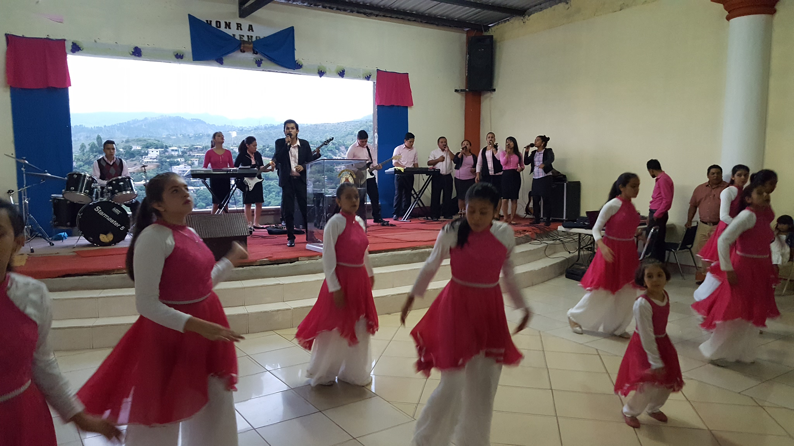
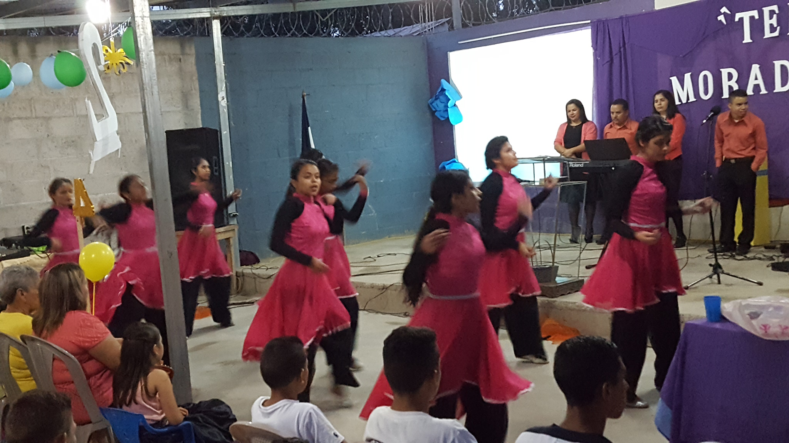
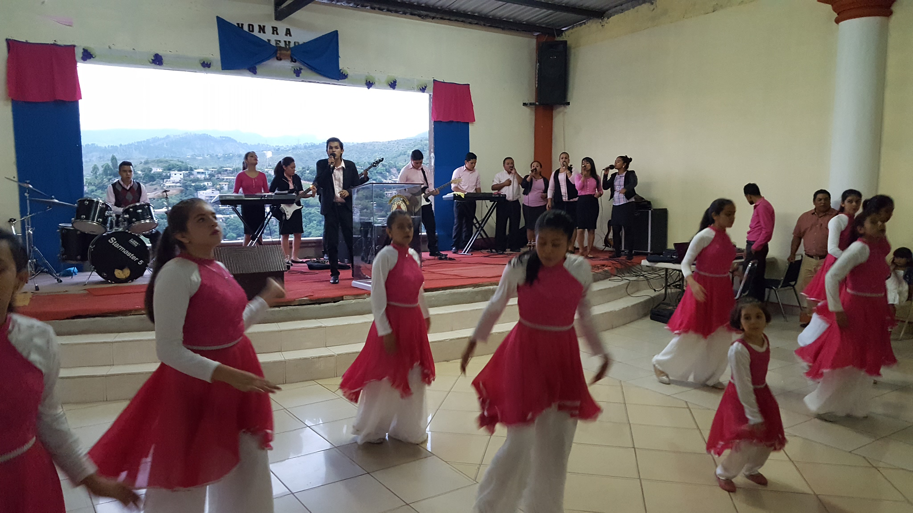
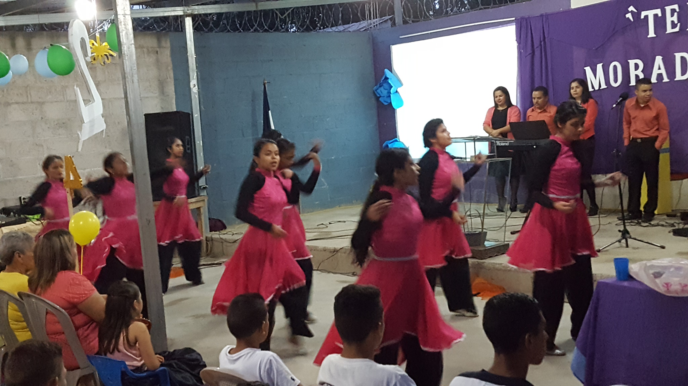

Ministerio de Jóvenes.
Acargo de: Geovany Rios y Cesar Jimenez.
El ministerio de jóvenes, trabaja con la juventud de la iglesia pero tambien con los adolescentes se encarga de una manera dinámica, energética, entusiasta y creativa de conseguir, evangelizar y ganar jóvenes para Cristo, con un firme propósito de cumplir la gran comisión y así rescatar esta generación que poco a poco se pierde. Este ministerio fundamental en esta area de la congregación de la iglesia para el crecimiento integral, personal y espiritual de todos y cada uno de los que son y seran parte de este ministerio.
Ministerio de Intercesión.
Acargo de: Orlando Amador.
Este ministerio dentro de la iglesia es el ministerio mas fuerte, mas atacado y usado, ya que en sus principios del ministerio esta fundamentado en el ayuno y la oración dos cosas muy importantes en el cristiano este ministerio son intercesores por cada persona, familia, peticiones de oración de diferentes tipos, por cada ministerio entre mucho más. En este ministerio Dios obra de gran manera es una columna muy fundamental para la fortaleza y el caminar de la iglesia y de toda congregación.
Discipulados.
Acargo como Director: Olman Hernandez.
El discpulado es una escuela bíblica en la cual la persona que se matricula estara recibiendo temas basicos de índole cristiana, el ingresado cursara cinco módulos, los cuales podra cursar dos módulos por un año. esta forma estratégica es para enseñar al recién convertio y al miembro estable a que pueda ir creciendo y enriqueciendo su saber en esta nueva vida en Cristo.

presione aqui para ir a la pagina oficialcopyright 2020 estamos a tu servicio


 
